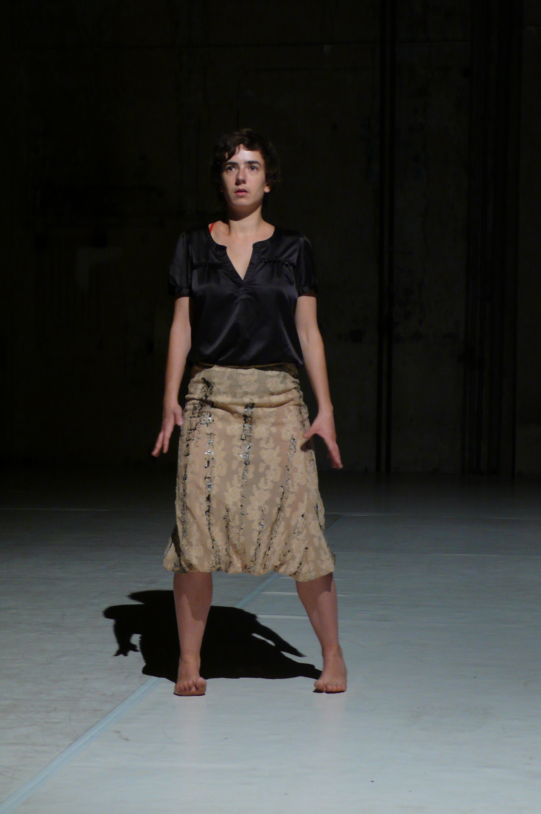

Sensation & Imagination, a Study (praticable) 
photo Yves Mettler This study explores movement and its perception through the filter of language and imagination. Anatomical facts and physiological reactions to imagined events are given a sensual reality by moving, materializing a body that is not (necessarily) present. This dance is a sketch proposal, an attempt at staging a practice I had been developing for a year and which would be the base for a group piece in 2009 (Collective Sensations).Credits Choreography& Dance Alice Chauchat Production Alice Chauchat Praticable was an open collective structure created in 2006 with Frédéric Gies, Frédéric de Carlo, Isabelle Schad and Odile Seitz for the horizontal distribution of movement knowledge and visibility. |